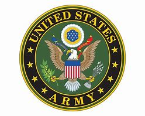

United States Army
Rank: Sergeant MOS: 25B/Information Technology Specialist
February 2019-Present
I joined the United States Army in February 2019 as a member of the New York National Guard and attended Basic Training at Fort Benning, home of the Infantry. Upon graduation of Basic Combat Training I shipped out to Fort Gordon, GA home of the Army's Cyber Center of Excellence. It was there that I trained in Cisco networking systems (CCNA) and network security fundamentals. During my time at Fort Gordon I received an Army Achievement Medal for being named Distinguished Graduate by obtaining the highest GPA in my class. I transitioned from the National Guard to the Regular (Active Duty) Army in July 2020 and I am currently stationed in Fort Campbell, Kentucky as a member of the 101st Airborne Division. My role as a team leader allows me to supply support and guidance to junior level Soldiers in my platoon while aiding senior level staff in daily operations. I am looking to build off my experience in the military and pursue new and exciting opportunities upon the completion of my military service in the summer of 2023.
New York City Department of Corrections
Correction Officer
January 2016-March 2020
I became a New York City Correction Officer after following a desire to pursue a career in civil service. While working for the department I was assigned to work at various sites on New York City's infamous jail complex, Rikers Island. While assigned to Rikers Island I worked at the Eric M. Taylor Center (EMTC) and the George R. Vierno Center (GRVC). My steady post was the facility's intake area commonly called "the receiving room" and I was responsible for processing all inmates entering and exiting the facility. I would review legal paperwork such as securing orders, sentence and commitment forms, along with various other court documents prior to accepting or discharging a person in our custody. These responsibilities were in addition to being a first responder to all facility alarms that may occur during my tour. I ultimately made the decision to leave my career as a Correction Officer to go back to school and pursue a position in the Information Technology field while focusing more on my Army career.
First Republic Bank
Senior Client Service Associate
June 2013-January 2016
Prior to pursuing a career in public service I was in the private sector working in the financial services industry. I joined First Republic Bank in June, 2013 as a Personal Banker but shifted over to the Client Services Team as my focus transitioned to banking operations. My responsibilities included assisting the private wealth management team by acting as a main point of contact for bank clients. I would assist with a variety of financial transactions such as the opening and closing of bank accounts, withdrawals, deposits, funds transfers, wire transfers, cashier’s checks, and debit card inquiries. I was also responsible for daily operational tasks such as providing quality assurance to the client service group by assisting with audits to ensure proper policy and procedure was adhered to. I also assisted with the onboarding and training of new employees through one-on-one and group sessions.